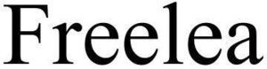

Trade Mark Journal No.2025/028 11 July 2025
WO0000001846452 (9,35)
Office of origin: United States of America
Date of International Registration:19 November 2024
Date of designation in the UK:
19 November 2024

International priority date claimed: 12 November 2024
(United States of America)
(98849526)
- Class 9
- Downloadable computer application software for mobile phones, namely, software for managing user accounts, tracking orders, and facilitating online purchases in a marketplace for consumer goods; downloadable computer application software for mobile phones, namely, software for selling and purchasing consumer goods in an online marketplace; downloadable computer e-commerce software to allow users to perform electronic business transactions via a global computer network; downloadable software in the nature of a mobile application for selling and purchasing consumer goods in an online marketplace.
- Class 35
- Advertising, promotion, and marketing services in the nature of videos and promotional activities for consumer retail goods; mobile advertising services for others in the field of consumer retail goods; on-line advertising and marketing services; on-line wholesale and retail store services and computerized on-line retail store services and computerized on-line retail store services and computerized on-line retail store services connected with the sale of featuring downloadable sound, music, image, video and game files; on-line wholesale and retail store services and computerized on-line retail store services and computerized on-line retail store services connected with the sale of consumer retail goods, namely clothing, footwear, headgear, luggage, bags and holdalls: on-line wholesale and retail store services and computerized on-line retail store services and computerized on-line retail store services connected with the sale of consumer retail goods, namely electrical and electronic household goods, personal computers, tablet computers, computer hardware, computer peripherals, computer software, photographic and cinematographic equipment, optical apparatus and instruments, telecommunications and communications apparatus and accessories therefor, household and kitchen appliances and kitchen accessories; on-line wholesale and retail store services and computerized on-line retail store services and computerized on-line retail store services connected with the sale of consumer retail goods, namely televisions, home cinema systems, DVD players, gaming consoles, electronic games, electronic amusement apparatus and accessories therefor, mobile phones and mobile phone accessories, smart household appliances, smart speakers, smartwatches, smartphones, home security apparatus, satellite navigation systems, and parts and fittings for all the aforesaid; on-line wholesale and retail store services and computerized on-line retail store services and computerized on-line retail store services connected with the sale of consumer retail goods, namely apparatus and instruments for recording, transmission or reproduction of sound, voice or images, personal care appliances, garden tools, headphones, portable telecommunications devices, portable audio/visual devices, portable navigation devices, portable gaming devices and related accessories, virtual reality headsets, and parts and fittings for all the aforesaid; on-line wholesale and retail store services and computerized on-line retail store services and computerized on-line retail store services connected with the sale of consumer retail goods, namely headphones, cables and power banks: on-line wholesale and retail store services and computerized on-line retail store services and computerized on-line retail store services connected with the sale of consumer retail goods, namely furniture, ornaments, pictures, paintings, wall hangings, mirrors, lamps, electric lamps, lamp globes, lenses for lamps, lamp shades, chandeliers, ceiling lights and light bulbs; on-line wholesale and retail store services and computerized on-line retail store services connected with the sale of consumer retail goods, namely perfuming preparations for the atmosphere, potpourri, essential oils, room perfume sprays, reed diffuser oils, preparations for perfuming or fragrancing the air, linen sprays, scented oils, refresher oils for perfumes and scents, scented sachets, fragrance oils, fragrance oils for scenting candles, perfumed room mist, perfumed room spray, room fragrances and scenters, room scenters in the form of waxed figures, incense, incense cones, incense sachets, incense spray, incense sticks, preparations, products and substances emitting a perfume or aroma for masking odours and smells, aromatherapy pillows comprising pot pourri in fabric containers, candles, scented candles, fragranced candles, aromatherapy candles, wax candles and gel candles, wicks, wax, gel for candle-making. tallow, tapers, coloured wax chips, tealights, nightlight candles, candles in glass containers, lamp oils and fuel oils, lavender lamp oil, candles in ceramic and metal container, air freshening preparations, air purifying preparations, room air fresheners, deodorants other than for personal use, preparations for neutralising odours, ornaments of common metals or their alloys, statuettes of common metal, wall plaques and statues made of common metal, whisks, mashers, electric kitchen machines, electric kitchen tools and utensils, hand held kitchen utensils, meat slicers, electric kitchen knives, liquidizers, blenders, grinders, food mixers, graters, food processors, cutlery, canteens of cutlery, forks, spoons, knives, bread knives, carving knives, carving forks, butchers' knives, palette knives, peeling knives, peelers, vegetable knives, knife sharpeners, plastic cutlery, plastic tableware, tableware, dinnerware, vegetable corers, blades, tin openers, can openers, slicers, bread slicers, egg slicers, cheese slicers, fish slices, choppers, cutters, tongs, ladles, nut crackers, foil cutters, ice tongs, ice crushers, ladles, meat choppers, mincers, nutcrackers, pizza cutters, peelers, vegetable peelers, pestles and mortars, scissors, stirrers, sugar tongs, shredders, graters, electric irons, steam irons and flat irons, thermometers, digital thermometers, timers, egg timers, digital timers, kitchen scales, electronic weighing scales, apparatus for lighting, heating, steam generating, cooking, refrigerating, drying, ventilating, water supply and sanitary purposes, lamp shades, lamp bases, kettles, toasters, sandwich toasters, ovens, baking ovens, cookers, convection ovens, stoves, grills, hobs, griddles, refrigerators, freezers, food blenders, fridge freezers, microwave cookers and ovens, barbecues, barbecue apparatus, beverage cooling apparatus, cold boxes, catering urns, bottle warmers, food warmers, chip pans, coffee makers, cooking utensils, deep fat fryers, water filters, fondues, lighters, ice cream machines, bread making machines, percolators, pressure cookers, rice cookers, espresso makers and coffee makers for domestic and/or commercial use, domestic appliances, kitchen appliances, water filters, water filtration and purification units and replacement cartridges and filters, clocks, horological and chronometric instruments, ornaments made of precious metal, furniture, beds, tables, chairs, coat stands and rails, magazine racks, filing cabinets and desks, television tables, mirrors, picture frames, goods of wood, cork, reed, cane, wicker, horn, bone, ivory, whalebone, shell, amber, mother-of- pearl, meerschaum and substitutes for all these materials, or of plastics, soft furnishings [cushions], cushions [furniture], chair cushions, chair pads, seat cushions, seat pads, blinds, roman blinds, window blinds and venetian blinds, bamboo curtains, bead curtains for decoration, curtain embraces, curtain holders, curtain holders, not of textile material, curtain hooks, curtain poles, curtain rails, curtain rings made of metal, curtain rings of metal, curtain rings, not of metal, curtain rings, curtain rods, curtain rollers, curtain tie-backs, curtain tracks, decorative bead curtains, metal curtain rings, non-metal curtain rings, poles for blinds, poles for curtains, rails for blinds, shower curtain hooks, shower curtain rings, shower curtain rods, suspension devices for curtains and blinds, suspension devices located on doors, tie-backs, tracks for blinds, clothes and clothes drying stands and airers, household or kitchen utensils and containers (not of precious metal or coated therewith), containers made of non- precious metal, glass, porcelain and earthen ware for household and kitchen use, baking dishes, bakeware, kitchen cookware, baking cases, baking tins, baking trays, baking sheets, cookware, basting brushes, ramekins, cake tins, cauldrons, pans, saucepans, platters, tureens, woks, basins, dinnerware, kitchenware, ovenware, stoneware, tableware, crockery, chinaware, pans, dishes, cups, mugs, plates and china dinner plates, grills, griddles, containers for food, lunchboxes, storage jars, knife block, egg cups, flasks, bowls, beakers, jars, jugs, chopsticks, beaters, blenders, bread bins, chopping boards, bottles, bottle brushes, bottle openers, coasters, trays, wire brushes, buckets, cans, cafetieres, carafes, decanters, skewers, spits, meat cutters, meat grinders, mincers, colanders, sieves, spatulas, spoons, spouts, whisks, strainers, juice squeezers, mixing spoons, garlic presses, melon ballers, scoops, bins, recipe holders, cooking utensils, kitchen utensils, serving utensils, pressure cookers, slow cookers, hollow ware for domestic use, funnels, gridirons, (non-electric), coffee percolators and coffee pots, pots, bowls, coal scuttles, coolers for wine or water, beverage coolers, bottle opener, bottle coolers, cocktail shakers, cocktail stirrers, ice buckets, ice trays, corkscrews, dish covers, shoe horns, plates and dishes, fruit masher, potato masher [hand operated kitchen utensil], tea sets, tea pots, glassware, bowls, mugs, tumblers, glasses, wine glasses, coffee cups, coffee grinders, coffee filters, cutlery trays, dinner services, napkin holders, picnic baskets, picnic utensils, picnic ware, pewter ware for household and kitchen utensils, sprinklers, sieves, moulds, trays, cake stands, cookie cutters, pastry cutters, pastry brushes, rolling pins, cookie jars, wire strainers, tea kettles, trivets, trays, spice racks, candlesticks and candle holders not of precious metal, coasters not of paper being leather and plastic, baskets of wicker and wood for household use, buckets, cloths and dish drying racks, towel and kitchen roll holders, trash cans, cake pans, cake servers, carving boards, cleaning cloth, coffee cups, colanders, cookie cutters, cookie sheets, dishware, garlic presses, glass bowls, rolling pins, salt and pepper mills, combs and sponges, brushes (except paint brushes), and domestic utensils; on-line wholesale and retail store services and computerized on-line retail store services connected with the sale of consumer retail goods, namely pot and pan scrapers, spatulas, turners, whisks, mug trees, household containers, namely, containers for food and soap containers, none being of precious metal or coated therewith, plastic serving trays, flasks, plastic coasters, water bottles sold empty, goblets, household containers and household utensils; on-line wholesale and retail store services and computerized on-line retail store services connected with the sale of consumer retail goods, namely whisks, spatulas, ladles, towel holders and napkin holders, containers for garbage, refuse containers, trash cans, garbage cans, dust bins, litter bins, waste paper bins, pedal bins, bins for garbage disposal, receptacles for household refuse, oven gloves and oven mitts, mashers, potato mashers, serving utensils, skewers, baskets for domestic use, breadbaskets [domestic], candelabra [candlesticks], candlesticks of common metal, candlesticks of glass, candlesticks of non-metallic materials, candlesticks, flowerpots, holders for flowers and plants [flower arranging), holders for paper napkins, napkin holders, napkin rings, ceramic ornaments, china ornaments, decorative objects [ornaments] made of china, decorative objects [ornaments] made of earthenware, decorative objects [ornaments] made of glass, ornaments made of china, ornaments made of ceramics, ornaments made of glass, wood or earthenware, bud vases, flower vases, glass vases, vases of ceramic, vases of earthenware, vases of glass, vases of porcelain, watering cans, watering devices, ironing boards and ironing board covers, textiles and textile goods, and bed and table covers; on-line wholesale and retail store services and computerized on-line retail store services connected with the sale of consumer retail goods, namely textile articles, namely, bed linen, duvet covers, pillow cases, bed sheets, bed blankets, table linen, table cloths, napkins, handkerchiefs, curtains, cloth pennants, cloth banners, cloth flags, towels, beach towels, textile wall hangings, face towels, tea towels, flannels, textile place mats and silk fabrics, table and bath linen, bath towels, textiles, curtains, curtain fabrics, curtain linings, blankets, throws, chair covers, cushion covers, duvets, pillows, fabrics, mattress covers, quilts, table runners, soft furnishings, table mats, tea towels, coasters, aprons and hats for chefs, artificial flowers, artificial plants, textile plants on artificial stems, textile flowers on artificial stems, artificial fruit, artificial vegetables, artificial garlands, flowers [artificial-], Flowers [wreaths of artificial-], fruit [artificial], garlands [artificial-], silk flowers, arrangements of artificial flowers for decorative purposes, artificial flower arrangements, artificial flowers made from polyester fabric, bouquets of artificial flowers, and wreaths of artificial flowers carpets, rugs, mats and matting, wall hangings (non-textile), linoleum and other materials for covering existing floors; on-line wholesale and retail store services and computerized on-line retail store services connected with the sale of consumer retail goods, namely cleaning and bleaching preparations, soaps, perfumery, make-up, cosmetics, lotions and cremes for application to the human body, deodorants, skincare preparations and haircare preparations; on-line wholesale and retail store services and computerized on-line retail store services connected with the sale of consumer retail goods, namely toys, games, playthings, baby feeding bottles, baby carriers, prams, pushchairs, nappies, baby food, baby milk, vitamins and food supplements; on-line wholesale and retail store services and computerized on-line retail store services connected with the sale of consumer retail goods, namely sporting articles, tents, sleeping bags, camping stoves, lanterns, headlamps, backpacks, hiking poles, compasses, GPS devices, multitools, pocket knives, water bottles, hydration packs, thermos flasks, camping cookware, mess kits, camp chairs, portable coolers, folding tables, hammocks, bivvy bags, tarps, carabiners, climbing ropes, belay devices, climbing harnesses, chalk bags, crash pads, trekking crampons, snowshoes, ice axes, avalanche probes, fishing rods, fishing reels, tackle boxes, bait buckets, fish finders, landing nets, lures, flies, spinning kits, bicycles, bicycle pumps, bicycle lights, bicycle locks, bicycle racks, repair kits, water bottle cages, cycling computers, scooters, skateboards, rollerblades, helmets (non-clothing). protective pads, sports balls, tennis rackets, badminton rackets, squash rackets, table tennis paddles, shuttlecocks, balls (soccer, basketball, rugby, etc.), goal nets, frisbees, disc golf discs, baseball bats, baseball gloves, cricket bats, wickets, hockey sticks, pucks, lacrosse sticks, gym mats, resistance bands, dumbbells, kettlebells, medicine balls, jump ropes, yoga mats, balance boards, exercise balls, rowing machines, treadmills, pull-up bars, ab rollers, archery bows, arrows, target boards, dartboards, darts, binoculars, telescopes, metal detectors, kites, drones, model airplanes, remote control cars, building kits, 3D puzzles, board games, playing cards, jigsaw puzzles, chess sets, arts and crafts kits, paint sets, easels, knitting needles, crochet hooks, model kits, and soldering kits; on-line wholesale and retail store services and computerized on-line retail store services connected with the sale of consumer retail goods, namely exercise apparatus, yoga mats, resistance bands, dumbbells, barbells, weight plates, kettlebells, medicine balls, pull- up bars, gymnastic rings, parallel bars, ab rollers, sit-up benches, weight benches, power racks, squat racks, treadmills, ellipticals, rowing machines, stationary bikes, jump ropes, balance boards, wobble cushions, core sliders, punching bags, boxing gloves, hand wraps, speed bags, agility cones, agility ladders, training hurdles, foam rollers, massage balls, muscle stimulators, heart rate monitors, fitness trackers, smartwatches, exercise balls, mini trampolines, stretch straps, ankle weights, wrist weights, fitness sliders, suspension trainers, plyo boxes, aerobic steps, gliding discs, grip strengtheners, thigh toner rings, battle ropes, sandbags, vibration plates, gym flooring, power towers, wall balls, slam balls, cable machines, resistance tubes, dip bars, gym timers, skipping counters, hydration belts, shaker bottles, gym bags, body composition scales, posture correctors, arm blasters, lifting belts, lifting straps, chalk blocks, sports tape, cooling towels, fitness dice, recovery boots, balance pads, rowing grips, yoga blocks, yoga straps, Pilates rings, Pilates reformers, mini resistance loops, weighted vests, training masks, hand grips, forearm trainers, and ab wheels; on-line wholesale and retail store services and computerized on-line retail store services connected with the sale of consumer retail goods, namely Tents, sleeping bags, bivvy bags, ground mats, inflatable mattresses, camp stoves, portable grills, camping cookware, utensils, mess kits, flasks, water bottles, hydration packs, coolers, lanterns, flashlights, headlamps, solar chargers, fire starters, waterproof matches, lighters, compasses, GPS devices, maps, altimeters, trekking poles, multi-tools, pocket knives, hatchets, foldable shovels, climbing ropes, carabiners, harnesses, belay devices, crampons, ice axes, avalanche probes, snowshoes, dry bags, waterproof pouches, backpacks, daypacks, stuff sacks, compression bags, rain covers, camp chairs, folding tables, hammocks, tarps, mosquito nets, insect repellent devices, bear-proof containers, food storage bags, first aid kits, emergency blankets, survival kits, whistle compasses, signal mirrors, binoculars, monoculars, portable showers, hygiene kits, biodegradable soap, toilet trowels, camping toilets, windbreakers (gear, not clothing), emergency radios, trekking gaiters, hiking spikes, tent repair kits, patch kits, paracord, guy lines, tent stakes, tent poles, campfire grills, spice kits for camping, portable coffee makers, foldable basins, solar lanterns, and camping towels; on-line wholesale and retail store services and computerized on-line retail store services connected with the sale of consumer retail goods, namely bicycles, scooters, roller skates, skateboards, electric bikes, bicycle lights, bicycle locks, kickstands, reflectors, bells, handlebar grips, pedals, bicycle computers, GPS mounts, phone mounts, water bottle holders, pannier racks, saddle bags, frame bags, repair kits, tire levers, bicycle pumps, mini pumps, tyre inflators, patch kits, spare inner tubes, bicycle chains, chain lube, bicycle cleaning kits, degreasers, multi-tools, torque wrenches, wheel truing stands, rollers, turbo trainers, balance bikes, children's bikes, training wheels, bicycle trailers, cargo bikes, scooter decks, scooter wheels, scooter grips, scooter clamps, scooter bearings, electric scooters, kick scooters, folding scooters, stunt scooters, roller skates (quad), inline skates, skate tool kits, replacement wheels, bearings, axle nuts, toe stops, skate bags, skate ramps, rail slides, safety pads (elbow/knee), skate cones; on-line wholesale and retail store services and computerized on-line retail store services connected with the sale of consumer retail goods, namely books, stationery, office requisites, magazines, novels, textbooks, encyclopaedias, dictionaries, atlases, children's books, picture books, board books, comic books, graphic novels, cookbooks, travel guides, self-help books, academic journals, art books, coffee table books, photo books, manuals, workbooks, activity books, planners, calendars, diaries, yearbooks, poetry books, biographies, historical non-fiction, science books, nature guides, fashion magazines, hobby magazines, trade publications, language learning books, puzzle books and colouring books; on-line wholesale and retail store services and computerized on-line retail store services connected with the sale of consumer retail goods, namely notebooks, pens, writing instruments, spiral notebooks, composition books, sketchbooks, notepads, legal pads, sticky notes, index cards, binders, file folders, document wallets, dividers, clipboards, ring binders, ballpoint pens, fountain pens, rollerball pens, gel pens, mechanical pencils, wooden pencils, coloured pencils, highlighters, markers, permanent markers, dry-erase markers, chalk markers, erasers, correction fluid, correction tape, rulers, pencil sharpeners, pencil cases, pen holders, staplers, staples, paper clips, bulldog clips, binder clips, glue sticks, liquid glue, tape, washi tape, scissors, cutting mats, craft knives, geometry sets, protractors, compasses, letter openers, envelopes, paper trays, and desk organizers; on-line wholesale and retail store services and computerized on-line retail store services connected with the sale of consumer retail goods, namely office furniture, desks, office chairs, filing cabinets, drawer units, monitor stands, printer stands, bookshelves, whiteboards, cork boards, notice boards, desk lamps, floor lamps, shredders, printers, scanners, photocopiers, laminators, label makers, barcode scanners, cash drawers, calculators, desktop computers, laptops, monitors, docking stations, external hard drives, USB hubs, surge protectors, wireless routers, webcams, headsets, microphones, speakers, network switches, phone stands, charging cables, laptop cooling pads, cable organizers, and ergonomic footrests; on-line wholesale and retail store services and computerized on-line retail store services connected with the sale of consumer retail goods, namely food, beverages, bread, white bread, wholemeal bread, baguettes, bagels, croissants, wraps, pita bread, naan bread, crumpets, muffins, rice, basmati rice, brown rice, jasmine rice, pasta, spaghetti, penne, fusilli, macaroni, couscous, oats, porridge oats, breakfast cereal, muesli, granola, flour, plain flour, self-raising flour, sugar, brown sugar, caster sugar, salt, pepper, herbs, spices, cooking oil, olive oil, sunflower oil, vegetable oil, butter, margarine, cheese, milk, full-fat milk, skimmed milk, yoghurt, cream, sour cream, eggs, sausages, bacon, ham, chicken, beef mince, lamb chops, frozen peas, frozen sweetcorn, frozen chips, frozen pizza, frozen fish fingers, frozen ready meals, fresh tomatoes, cucumbers, carrots, onions, garlic, apples, bananas, oranges, grapes, berries, canned beans, canned tomatoes, canned soup, tinned tuna, tinned sardines, biscuits, chocolate bars, crisps, popcorn, nuts, dried fruit, snack bars, bottled water, flavoured water, fruit juice, cola, lemonade, energy drinks, tea, green tea, black tea, coffee, instant coffee, ground coffee, beer, lager, cider, wine, spirits, cooking sauces, tomato sauce, mayonnaise, mustard, salad dressing; on-line wholesale and retail s tore services connected with the sale of consumer retail goods, namely laundry detergent, washing powder, fabric conditioner, stain remover, bleach, toilet cleaner, drain cleaner, surface spray, disinfectant, multi-surface cleaner, glass cleaner, bathroom cleaner, kitchen cleaner, descaler, mould remover, floor cleaner, mop heads, dusters, microfibre cloths, sponges, scouring pads, rubber gloves, bin liners, refuse sacks, paper towels, tissues, toilet rolls, antibacterial wipes, disinfectant wipes, oven cleaner, furniture polish, air freshener spray, plug-in air fresheners, air freshener refills, gel air fresheners, toilet rim blocks, urinal cakes, vacuum bags, broom handles, dustpans, mops, buckets, laundry baskets, ironing water, clothes pegs, lint rollers, carpet cleaner, carpet shampoo, pet stain remover, insect sprays, fly killer, ant powder, dishwasher tablets, rinse aid, washing-up liquid, sponge scourers, bottle brushes, dishcloths, dish drainers, oven gloves, scrubbing brushes, sink unblocker, grease remover, eco cleaning sprays, biodegradable wipes, degreasers, hand sanitisers, soap bars, liquid soap, shower cleaner, antibacterial gel, surface wipes, baby bottle sterilising fluid, window cleaning spray, washing machine cleaner, fridge deodoriser, dehumidifier refill packs, silicone sealant remover, grill cleaner, pet odour eliminator, septic tank treatment, polish for stainless steel, toilet brush sets, fabric sprays, upholstery cleaner, leather cleaner, bathroom descaler, scale inhibitor tablets, and rubber plungers; on-line wholesale and retail store services and computerized on-line retail store services connected with the sale of consumer retail goods, namely toothpaste, toothbrushes, electric toothbrushes, dental floss, mouthwash, interdental brushes, shampoo, conditioner, dry shampoo, hair gel, hair spray, hair mousse, hair oil, hair serum, combs, hairbrushes, razors, razor blades, shaving gel, shaving foam, aftershave, deodorant sticks, roll-on deodorants, spray deodorants, body wash, shower gel, bar soap, hand soap, body lotion, moisturiser, face cream, night cream, face wash, exfoliating scrub, toner, cleansing wipes, cotton pads, cotton buds, lip balm, lipstick, mascara, eyeliner, eyeshadow, blusher, foundation, concealer, nail polish, nail polish remover, nail clippers, nail file, tweezers, face masks, nose strips, pore strips, bath bombs, bubble bath, bath salts, talcum powder, sun cream, after sun lotion, insect repellent, bite relief cream, feminine hygiene pads, tampons, menstrual cups, intimate wash, baby wipes, baby lotion, baby oil, baby powder, nappy rash cream, maternity pads, ear buds, ear plugs, travel toiletries, travel toothbrushes, reusable make-up removers, beard oil, beard balm, beard combs, hair colouring kits, foot cream, heel balm, deodorising foot spray, hand cream, anti-ageing creams, firming body lotion, eye cream, cleansing balm, and micellar water; on-line wholesale and retail store services and computerized on-line retail store services connected with the sale of consumer retail goods, namely phone holders, magnetic phone mounts, dash cameras, sat nav mounts, wireless car kits, AUX cables, USB chargers, car phone chargers, car FM transmitters, steering wheel covers, gear knob covers, seat covers, seat cushions, lumbar support cushions, neck pillows, armrest covers, sun shades, window tints, dash organisers, car organisers, boot organisers, visor organisers, coin holders, car air fresheners, clip-on air fresheners, plug-in car fresheners, USB air purifiers, car vacuums, back seat hooks, seatbelt pads, foot mats, boot liners, pedal covers, gear shift knobs, mirror hangers, emergency window hammers, seatbelt cutters, first aid kits, warning triangles, high-vis vests, ice scrapers, snow brushes, dehumidifier bags, windscreen covers, screen demisters, car fans, car heaters, car coolers, car fridges, cigarette lighters, novelty gear knobs, key fobs. keychains, steering wheel locks, parking sensors, reverse cameras, tyre pressure gauges, puncture repair kits, jump leads, tow ropes, roof bars, roof racks, car covers, bonnet bras, wind deflectors, sunroof deflectors, under-seat storage boxes, pet barriers, dog seat covers, car step stools, LED interior lights, cabin filters, fuse boxes, dashboard cameras, OBD2 scanners, tyre inflators, booster cables, floor mats, custom boot mats, fog lamp covers, fuel caps, battery terminals, wheel nut covers, tyre valve caps, anti-slip mats, glove box organisers, cup holders, console trays, and handbrake covers; on-line wholesale and retail store services and computerized on-line retail store services connected with the sale of consumer retail goods, namely car shampoo, snow foam, wax polish, spray wax, car polish, detailing spray, clay bars, wheel cleaner, tyre dressing, glass cleaner, interior cleaner, dashboard wipes, leather cleaner, leather conditioner, upholstery cleaner, stain remover spray, fabric protector spray, trim restorer, headlight restorer, bug remover, bird dropping remover, tar remover, adhesive remover, degreaser spray, engine cleaner. underbody sealant, coolant, screen wash, antifreeze, radiator flush, fuel injector cleaner, brake cleaner, brake fluid, power steering fluid, transmission fluid, oil additive, fuel additive, touch-up paint, scratch remover, paint protection film, microfibre cloths, chamois leather, detailing brushes, wax applicator pads, foam applicators, polishers, dual action polishers, buffer pads, rotary polishers, hose pipes, foam lances, waterless car wash, tyre shine gel, tyre foam, tyre cleaning brush, wheel brushes, grit guards, drying towels, wash mitts, bug sponges, glass cloths, clay lubricants, interior detailers, engine bay cleaner, carpet cleaner, vinyl cleaner, air con cleaner, ozone cleaner, car scent bombs, water blade, hydrophobic coatings, silica spray, sealants, pH-neutral shampoo, ceramic coating kits, decontamination sprays, iron fallout removers, panel wipe, prep sprays, tyre applicators, plastic polish, plastic conditioners, degreasers, leather wipes, quick detailers, wax sealants, rim cleaner gel, bucket organisers; on-line wholesale and retail store services and computerized on-line retail store services connected with the sale of consumer retail goods, namely vehicle tyres, all-season tyres, summer tyres, winter tyres, off-road tyres, performance tyres, run-flat tyres, touring tyres, SUV tyres, van tyres, motorcycle tyres, tubeless tyres, budget tyres, premium tyres, part-worn tyres, whitewall tyres, low-profile tyres, radial tyres, cross-ply tyres, commercial vehicle tyres, heavy-duty tyres, retread tyres, snow chains, snow socks, wheel rims, alloy wheels, steel wheels, split rims, chrome rims, black alloy wheels, diamond-cut alloys, powder-coated rims, wheel hubcaps, centre caps, valve caps, wheel nuts, locking wheel nuts, wheel nut keys, wheel spacers, rim protectors, tyre inflators, tyre repair kits, tyre sealant, tyre foam, digital tyre pressure gauges, manual tyre pressure gauges, tyre depth gauges, tyre levers, bead breakers, wheel balancers, tyre changers, alignment kits, tyre bead sealers, tyre weights, tyre mounting paste, valve stems, valve core tools, inner tubes, balancing weights, tyre storage bags, tyre wall cleaner, rim cleaner, tyre applicators, tyre dressing kits, tyre tread depth tools, puncture repair patches, wheel alignment gauges, rubber valves, snap-in valves, high-pressure valves, chrome valves, alloy wheel cleaners, rim brushes, alloy rim protectors, wheel arch guards, fender trims, tyre shine, rim wax, rim polish, lug nuts, spacer kits; on-line wholesale and retail store services and computerized on-line retail store services connected with the sale of consumer retail goods, namely jewellery, watches, gold, silver, costume jewellery, gold necklaces, silver necklaces, costume necklaces, chain necklaces, pendant necklaces, choker necklaces, gold earrings, silver earrings, hoop earrings, stud earrings, drop earrings, clip-on earrings, gemstone earrings, diamond earrings, gold bracelets, silver bracelets, charm bracelets, bangles, cuffs, tennis bracelets, beaded bracelets, anklets, body chains, brooches, pins, lapel pins, tie clips, collar pins, ear cuffs, ear climbers, nose rings, nose studs, eyebrow rings, lip rings, tongue studs, belly bars, belly chains, toe rings, signet rings, engagement rings, wedding rings, eternity rings, cocktail rings, cluster rings, stacking rings, mood rings, birthstone rings, statement rings, pearl jewellery, crystal jewellery, enamel jewellery, resin jewellery, stainless steel jewellery, gold-plated jewellery, silver-plated jewellery, rose gold jewellery, white gold jewellery, mixed-metal jewellery, minimalist jewellery, gothic jewellery, antique jewellery, vintage jewellery, handmade jewellery, personalised jewellery, religious jewellery, zodiac jewellery, birthstone pendants, locket necklaces, friendship bracelets, men's chains, women's jewellery sets, children's jewellery, bridal sets, jewellery cleaning cloths, jewellery boxes, ring boxes, earring organisers, necklace stands, bracelet holders, polishing cloths, travel jewellery cases; on-line wholesale and retail store services and computerized on-line retail store services connected with the sale of consumer retail goods, namely analog watches, digital watches, chronograph watches, automatic watches, quartz watches, mechanical watches, dive watches, dress watches, sports watches, field watches, pilot watches, skeleton watches, fashion watches, smartwatch bands, smartwatch chargers, fitness trackers, smartwatches with GPS, smartwatches with heart rate monitors, smartwatches with ECG, kids' smartwatches, hybrid smartwatches, solar-powered watches, kinetic watches, moonphase watches, world time watches, smartwatch screen protectors, watch straps, leather watch straps, metal bracelets, silicone watch bands, NATO straps, Milanese loops, link removers, watch boxes, watch winders, watch rolls, watch cushions, strap changing tools, watch spring bar tools, waterproof smartwatches, water-resistant watches, rugged smartwatches, military watches, smartwatch cases, smartwatch bumpers, charging docks, smartwatch skins, smartwatch screen guards, smartwatch stands, smartwatch cleaning kits, GPS running watches, golf watches, diving smartwatches, luxury smartwatches, fashion smartwatches, watch face downloads, smartwatch apps, voice assistant smartwatches, contactless payment watches, music storage smartwatches, children's GPS trackers, women's slim smartwatches, smartwatches with blood oxygen sensors, watch repair kits, watch tools, battery replacement kits, time-setting tools, anti- magnetic watches, watch bezels, smartwatch armbands, watch clasp extenders; online advertising and marketing services in the field of consumer retail goods; operating on- line marketplaces for buyers and sellers of consumer retail goods; operating on-line marketplaces for sellers and buyers of goods and/or services; providing an online marketplace for exchanging goods and services with other users via a website; provision of specific consumer product information for users with specific informed recommendations of products and services validated by the users' inputted preferences and social network via a website; provision of an on-line marketplace for buyers and sellers of goods and services; provision of an on-line marketplace for buyers and sellers of consumer retail goods; provision of an online marketplace for buyers and sellers of goods and services.
FREELEA CORP
Representative: IPEY, Apex House, Thomas Street, Trethomas Caerphilly CF83 8DP UNITED KINGDOM